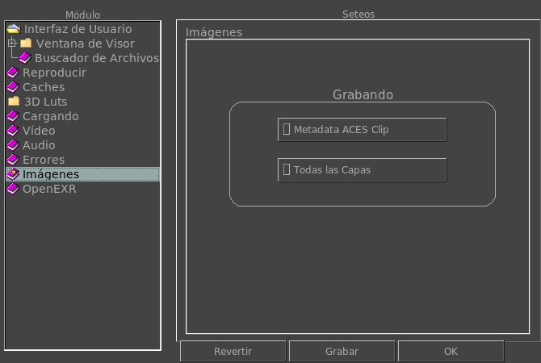

|  |
Activando esta opción hará que el boton de Metadata del Clip de ACES Clip esté siempre prendido cuando se graba una imagen. La Metadata del clip de Aces es una file por separado que contiene información del LUT de la imagen (La Input Device Transform, el Look Mod Transforms, el Rendering Transform, y el Output Device Transform). Prendiendo esta opción hará que el botón para grabar todas las capas esta activado por defecto. La opción de Todas las Capas graba todos los canales de archivos con multiples canales, vistas o capas, como OpenEXR, TIFF, PSD, etc. |